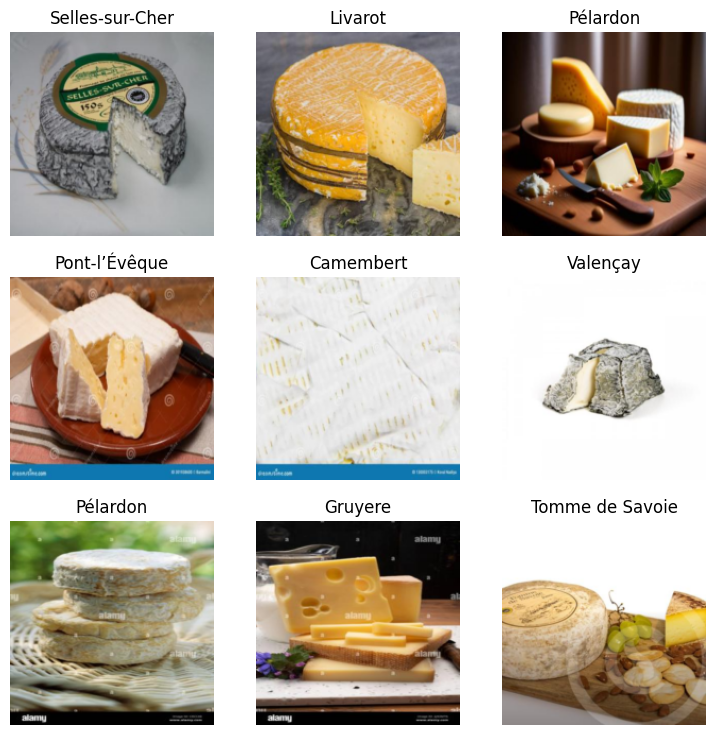
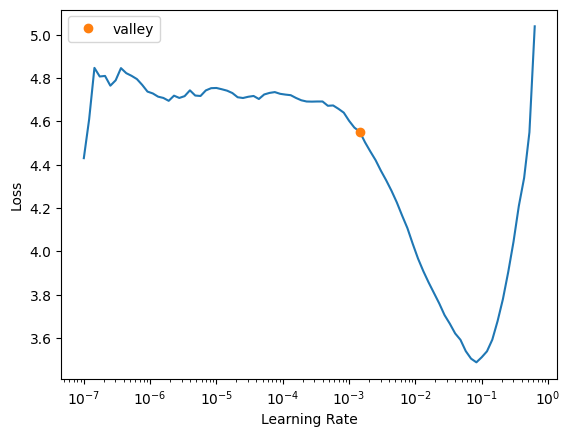

cheeses = [
"Camembert",
"Roquefort",
"Comté",
"Époisses de Bourgogne",
"Tomme de Savoie",
"Bleu d’Auvergne",
"Brie de Meaux",
"Mimolette",
"Munster",
"Livarot",
"Pont-l’Évêque",
"Reblochon",
"Chabichou du Poitou",
"Valençay",
"Pélardon",
"Fourme d’Ambert",
"Selles-sur-Cher",
"Cantal",
"Neufchâtel",
"Banon",
"Gruyere"
]Which cheese are we eating?
Machine Learning
Computer Vision
Python
Did you ever wonder what kind of cheese you should buy? They all look the same. And then the embarrasement when you can just point and say: that one. Meet the cheese classifier.
1 Let’s start with the why
I love cheese. Sometimes it is quite difficult to distinguish the varieties. Think about the embarrasement when you are in front of a mountain of cheese and can only point with your finger.
Therefore, I decided to built a ML classifier to help me.
The special difficulty here is that cheeses all look quite similar. Take, for example, the swiss Gruyere and the French Comte.
They are twins.
2 Let’s continue with with the data.
First, we need some data. Fast.ai provides an easy download module to download images from DuckDuckGo.
As an alternative, we could use a dataset, if we have one. Let’s start by downloading the files and then create a dataset.
2.1 Getting data from DuckDuckGo
Let’s start by defining what we want to download. We want cheese. In particular, French cheese.
To have a larger variety of images we define some extra search terms.
search_terms = [
"cheese close-up texture",
"cheese macro shot",
"cheese cut section"
]As we work with Fast.ai , let’s import the basic stuff.
from duckduckgo_search import DDGS
from fastcore.all import *
from fastai.vision.all import *
def search_images(keywords, max_images=20): return L(DDGS().images(keywords, max_results=max_images)).itemgot('image')
import time, jsonAnd then define our download function:
from fastdownload import download_url
from pathlib import Path
import time
data_acquisition=False
def download():
# Loop through all combinations of cheeses and search terms
for cheese in cheeses:
dest = Path("which_cheese") / cheese # Create subdirectory for each cheese
dest.mkdir(exist_ok=True, parents=True)
for term in search_terms:
query = f"{cheese} {term}"
download_images(dest, urls=search_images(f"{query} photo"))
time.sleep(5)
# Resize images after downloading
resize_images(dest, max_size=400, dest=dest)
# Run download only if data acquisition is enabled
if data_acquisition:
download()We can verify the images now or later.
if data_acquisition:
failed = verify_images(get_image_files(path))
failed.map(Path.unlink)
len(failed)
failed2.2 Loading data from a Kaggle dataset
I created a dataset of these images to avoid having to download again when I start over.
Sadly to uncertain copyright issues of this data, my dataset needs to remain private. But you can easily create your own.
As I run most of my code locally, I have some code to get it from Kaggle
competition_name= None
dataset_name = 'cheese'
import os
from pathlib import Path
iskaggle = os.environ.get('KAGGLE_KERNEL_RUN_TYPE', '')
if competition_name:
if iskaggle:
comp_path = Path('../input/'+ competition_name)
else:
comp_path = Path(competition_name)
if not path.exists():
import zipfile,kaggle
kaggle.api.competition_download_cli(str(comp_path))
zipfile.ZipFile(f'{comp_path}.zip').extractall(comp_path)
if dataset_name:
if iskaggle:
path = Path(f'../input/{dataset_name}')
else:
path = Path(dataset_name)
if not path.exists():
import zipfile, kaggle
kaggle.api.dataset_download_cli(dataset_name, path='.')
zipfile.ZipFile(f'{dataset_name}.zip').extractall(path) Now we have downloaded the data, we can start using it.
3 Cleaning the data with the help of our first model
Before we dive into different options for modelling, we will do a quick pass through the data and see which images are bad.
The background is that the scrapper picks up many images, which are not good for training.
We start by creating a working copy of the dataset.
!mkdir -p working/which_cheese_first
!cp -r cheese/which_cheese working/which_cheese_first To be sure that all images are valid, we check again for corrupeted files and remove them.
from pathlib import Path
from PIL import Image
data_path = Path("working/which_cheese_first")
# Check all images
corrupt_files = []
for img_path in data_path.rglob("*.*"): # Match all files inside subfolders
try:
with Image.open(img_path) as img:
img.verify() # Verify if it's a valid image
except (IOError, SyntaxError):
corrupt_files.append(img_path)
# Remove corrupt images
print(f"Found {len(corrupt_files)} corrupt images.")
for corrupt in corrupt_files:
print(f"Deleting {corrupt}")
corrupt.unlink() # Delete the fileFound 48 corrupt images.
Deleting working/which_cheese_first/which_cheese/Roquefort/350d3e67-dcf6-4292-b963-c1d5841b8788.jpg
Deleting working/which_cheese_first/which_cheese/Roquefort/594d40b1-f655-4db1-b3a9-4e7d6bb6c631.jpg
Deleting working/which_cheese_first/which_cheese/Roquefort/32a9069e-52c2-47e1-9db4-16197556c4fb.jpg
Deleting working/which_cheese_first/which_cheese/Roquefort/c73fb213-3813-43fd-b5ae-2d390ca8e3d5.jpg
Deleting working/which_cheese_first/which_cheese/Roquefort/2c426320-24bd-4869-8f1c-d09171ac6294.jpg
Deleting working/which_cheese_first/which_cheese/Roquefort/83a95414-4083-48d7-9956-be5d82b05caf.jpg
Deleting working/which_cheese_first/which_cheese/Roquefort/f4f09c62-652b-400c-8e09-419389635fc4.jpg
Deleting working/which_cheese_first/which_cheese/Roquefort/dfa07f3c-0931-49aa-b3c2-9c4a5901565d.jpg
Deleting working/which_cheese_first/which_cheese/Roquefort/609abf59-c1f0-4a34-b2cf-1bedf1b4cea0.jpg
Deleting working/which_cheese_first/which_cheese/Roquefort/b56ab8cc-5b37-40c9-be31-57d14c843978.jpg
Deleting working/which_cheese_first/which_cheese/Roquefort/422aec71-31d9-421e-880c-91867eaa5dfb.jpg
Deleting working/which_cheese_first/which_cheese/Roquefort/5591880b-37f4-4bcc-9927-8f60b6d6bb37.jpg
Deleting working/which_cheese_first/which_cheese/Roquefort/a9e2a7ad-038e-4b6d-8dee-19fd1661ebe1.jpg
Deleting working/which_cheese_first/which_cheese/Roquefort/4a572868-b982-47ed-b96e-3eb1a755e32a.jpg
Deleting working/which_cheese_first/which_cheese/Camembert/8903d049-4256-4fe5-9716-48e5fc8ef52b.jpg
Deleting working/which_cheese_first/which_cheese/Camembert/849c9bb0-b717-40a7-922e-091e22e36579.jpg
Deleting working/which_cheese_first/which_cheese/Camembert/4582e06a-0218-4b6b-aeaf-7e7d61dd3827.jpg
Deleting working/which_cheese_first/which_cheese/Camembert/bf950a7d-6ab2-4dd3-81dc-5ec14b9964dc.jpg
Deleting working/which_cheese_first/which_cheese/Camembert/052b599d-f560-473c-947c-74bb3c138167.jpg
Deleting working/which_cheese_first/which_cheese/Camembert/ccf3f8e7-aa87-426d-bea2-a1f18a89be05.jpg
Deleting working/which_cheese_first/which_cheese/Manchego/f7de39d9-0ff2-4a99-aa92-807b27fa7d90.jpg
Deleting working/which_cheese_first/which_cheese/Manchego/0352de9a-3f83-4ce7-bfbe-207da04840a3.jpg
Deleting working/which_cheese_first/which_cheese/Manchego/0592b012-96e5-4f22-ac2e-acc8ab41ecc4.jpg
Deleting working/which_cheese_first/which_cheese/Fourme d’Ambert/0e36dc86-5e2a-4635-afcc-e3e0ec972aee.jpg
Deleting working/which_cheese_first/which_cheese/Neufchâtel/d827858f-aac0-49f4-b397-facadcfb70fb.jpg
Deleting working/which_cheese_first/which_cheese/Neufchâtel/bed8cf04-9305-4f00-9a8a-1b869e00701c.jpg
Deleting working/which_cheese_first/which_cheese/Neufchâtel/8963c142-9a63-43dc-8268-f54a1b6fbb2b.jpg
Deleting working/which_cheese_first/which_cheese/Neufchâtel/bbf224a3-5033-49c0-8b0c-92068e50382f.jpg
Deleting working/which_cheese_first/which_cheese/Neufchâtel/19d6e4f5-0393-455c-b2d4-7ecccfd93431.jpg
Deleting working/which_cheese_first/which_cheese/Neufchâtel/6ad1c9d8-1f29-4da8-ae7d-78915460cf35.jpg
Deleting working/which_cheese_first/which_cheese/Selles-sur-Cher/93d14546-21bf-46e5-89de-e336b474baf3.jpg
Deleting working/which_cheese_first/which_cheese/Mimolette/17abeba3-b113-4c84-90ed-b17b6152c71d.jpg
Deleting working/which_cheese_first/which_cheese/Mimolette/72f3db51-da86-4934-bad7-c1b5e54cfb46.jpg
Deleting working/which_cheese_first/which_cheese/Mimolette/16f74a99-f1ef-46fd-a809-8f332ad235b7.jpg
Deleting working/which_cheese_first/which_cheese/Époisses de Bourgogne/9484a03b-af27-4155-a950-bc07187f00f0.jpg
Deleting working/which_cheese_first/which_cheese/Livarot/ffe3e263-a49b-41bc-bdba-4b66cdc12475.jpg
Deleting working/which_cheese_first/which_cheese/Livarot/57e84bd7-8936-4d55-8ec4-cfcc1073b9a4.jpg
Deleting working/which_cheese_first/which_cheese/Gruyere/9316e837-a0b2-468a-a287-69ee27b840ba.jpg
Deleting working/which_cheese_first/which_cheese/Gruyere/dcc3320a-408c-4b93-a1b6-bf2f3f25aa15.jpg
Deleting working/which_cheese_first/which_cheese/Gruyere/3d5755ba-b8b3-4636-8213-54a3bf19613d.jpg
Deleting working/which_cheese_first/which_cheese/Comté/5b92cce2-46d4-46f8-9f0f-7952076ded0a.jpg
Deleting working/which_cheese_first/which_cheese/Reblochon/3ff8d8f8-09c4-4f83-85b8-9c089fcd6805.jpg
Deleting working/which_cheese_first/which_cheese/Pélardon/a0e86302-8ca3-47ab-ab4c-bdf4834ca208.jpg
Deleting working/which_cheese_first/which_cheese/Pélardon/6370f787-f13e-4acf-aefb-ad67f68d32c2.jpg
Deleting working/which_cheese_first/which_cheese/Pont-l’Évêque/4efc1ad3-575d-4a32-9063-e403fd57d7c9.jpg
Deleting working/which_cheese_first/which_cheese/Tomme de Savoie/5e23fd21-574a-47a0-bc9b-ca52984ae9a5.jpg
Deleting working/which_cheese_first/which_cheese/Tomme de Savoie/5cf2571c-74f7-4a5b-9374-ef4c480267df.jpg
Deleting working/which_cheese_first/which_cheese/Valençay/a45d3613-5dbc-45b5-85c0-2ead70ccf221.jpg3.1 Model definition
We will define a simple model and check if the data is loaded correctly. The most simple model for image classification is resnet18.
from fastcore.all import *
from fastai.vision.all import *cheese = DataBlock(
blocks=(ImageBlock, CategoryBlock),
get_items=get_image_files,
splitter=RandomSplitter(valid_pct=0.2, seed=42),
get_y=parent_label,
item_tfms=[Resize(192, method='squish')]
)dls = cheese.dataloaders("working/which_cheese_first")dls.show_batch()
For the metrics, I chose accuracy as this is the most easy to analyze. We later see that the dataset becomes slightly imbalanced in training and F1-score would be better.
learn = vision_learner(dls, resnet18, metrics=accuracy)We then do a quick learning pass.
learn.fine_tune(3)| epoch | train_loss | valid_loss | accuracy | time |
|---|---|---|---|---|
| 0 | 4.307302 | 2.287525 | 0.356164 | 00:02 |
| epoch | train_loss | valid_loss | accuracy | time |
|---|---|---|---|---|
| 0 | 2.265255 | 1.649305 | 0.547945 | 00:03 |
| 1 | 1.552460 | 1.265489 | 0.662100 | 00:03 |
| 2 | 1.129812 | 1.213783 | 0.666667 | 00:03 |
As we can see, accuracy increased to 66% after 3 epochs.
4 Data Cleaning
We can have a look at the confusion matrix. There are some cheeses that are easily confused with each other. For example Bleu d’Auvergne with Fourme d’Ambert. In fact, in cheese stores outside France, few people seem to know the second one. But also the hard cheeses, Cantal, Comte, and Gruyere. The last two are two standard mountain cheeses, one from France and the other from Switzerland. The only differ by their texture. Comte of the same age are a little creamier and have fewer crevices. I especially added the Gruyere to make the dataset harder.
interp = ClassificationInterpretation.from_learner(learn)
interp.plot_confusion_matrix()Let’s have a look at the top losses.
interp.plot_top_losses(10)4.1 All the same?
As expected, similar cheese from the same group is difficult to distinguish.
Let’s do some data cleaning.
For the Comte, Gruyere, Munster: pictures with the highest loss are those with little detail or other accessories like bread or knifes.
from fastai.vision.widgets import *files_to_clean=[]cleaner = ImageClassifierCleaner(learn)
cleaner4.2 IMPORTANT: How to use the cleaner
For each category and train & valid sets, select the images and then run the following cell. It seems the cleaner doesn’t remember the selections in other categories.
We can also not run the above cell multiple times after we cleaned some files, as those will be missing. Instead, we go through all categories and collect files to be deleted.
We do not change categories for now.
for idx in cleaner.delete():
files_to_clean.append(cleaner.fns[idx])for file in files_to_clean:
try:
file.unlink()
except:
passAfter a lot of examination I cleaned my dataset from 1100 files to 1029. I have run the following cells to create a copy of the cleaned data. For protection of the data, this cell is commented.
#!mkdir -p working/which_cheese_cleaned
#!cp -r working/which_cheese_first working/which_cheese_cleaned5 Fast iterations to improve to analyze the data
5.1 Working with cleaned data
Now we have cleaned some data, we can train again, using more advanced techniques.
We will start by a simple training again, to see if the cleaning was successful.
from fastcore.all import *
from fastai.vision.all import *cheese = DataBlock(
blocks=(ImageBlock, CategoryBlock),
get_items=get_image_files,
splitter=RandomSplitter(valid_pct=0.2, seed=42),
get_y=parent_label,
item_tfms=[Resize(192, method='squish')]
)
dls = cheese.dataloaders("working/which_cheese_cleaned")
learn = vision_learner(dls, resnet18, metrics=accuracy)learn.fine_tune(3)| epoch | train_loss | valid_loss | accuracy | time |
|---|---|---|---|---|
| 0 | 4.137223 | 2.343409 | 0.326829 | 00:02 |
| epoch | train_loss | valid_loss | accuracy | time |
|---|---|---|---|---|
| 0 | 2.324481 | 1.571146 | 0.570732 | 00:02 |
| 1 | 1.581721 | 1.212596 | 0.643902 | 00:02 |
| 2 | 1.146727 | 1.148679 | 0.678049 | 00:02 |
We now roughly archieve 68% accuracy. Let’s train further to see how far when can get.
learn.fine_tune(13)| epoch | train_loss | valid_loss | accuracy | time |
|---|---|---|---|---|
| 0 | 0.523904 | 1.073870 | 0.717073 | 00:02 |
| epoch | train_loss | valid_loss | accuracy | time |
|---|---|---|---|---|
| 0 | 0.314336 | 1.042765 | 0.721951 | 00:02 |
| 1 | 0.260081 | 0.991794 | 0.741463 | 00:02 |
| 2 | 0.203073 | 0.943358 | 0.741463 | 00:02 |
| 3 | 0.158532 | 0.913470 | 0.756098 | 00:02 |
| 4 | 0.141772 | 0.872876 | 0.751220 | 00:02 |
| 5 | 0.121437 | 0.816914 | 0.751220 | 00:02 |
| 6 | 0.101683 | 0.836497 | 0.765854 | 00:02 |
| 7 | 0.085780 | 0.845604 | 0.751220 | 00:02 |
| 8 | 0.071734 | 0.842247 | 0.760976 | 00:02 |
| 9 | 0.062432 | 0.823996 | 0.765854 | 00:02 |
| 10 | 0.053119 | 0.811724 | 0.760976 | 00:02 |
| 11 | 0.044131 | 0.817966 | 0.760976 | 00:02 |
| 12 | 0.038983 | 0.820316 | 0.760976 | 00:02 |
We seem to have hit a wall at 76% accuracy as early as iteration 6.
5.1.1 A word on the choice of metrics
Earlier I chose accuracy as the metric. Let’s examine our data to see if the choice is still valid.
pd.Series([dls.vocab[o[1]] for o in dls.train_ds]).value_counts()Fourme d’Ambert 48
Chabichou du Poitou 47
Mimolette 44
Pont-l’Évêque 44
Brie de Meaux 43
Comté 41
Tomme de Savoie 41
Cantal 40
Pélardon 40
Reblochon 39
Valençay 39
Bleu d’Auvergne 38
Neufchâtel 37
Livarot 36
Selles-sur-Cher 35
Camembert 34
Époisses de Bourgogne 33
Manchego 32
Munster 32
Gruyere 29
Roquefort 27
Banon 24
Name: count, dtype: int64As I mentioned earlier, the dataset is no longer balanced. However, it is also not imbalanced, as the imbalance is 2:1 and not 1:10, an order of magnitude. We stick with accuracy.
5.2 Data Augmentation
We do not have many images in the data. Therefore, we will use data augmentation and move from squishing to RandomResizedCrop.
cheese_augmented = DataBlock(
blocks=(ImageBlock, CategoryBlock),
get_items=get_image_files,
splitter=RandomSplitter(valid_pct=0.2, seed=42),
get_y=parent_label,
item_tfms=RandomResizedCrop(192, min_scale=0.3),
batch_tfms=aug_transforms(mult=2))
dls = cheese_augmented.dataloaders("working/which_cheese_cleaned")Note: I choose here to override the variables. A standard programming approach would use new variables. However, the learner reserves memory on the GPU. We will hit an
out of memoryerror. One option is to delete the previous variable and free up the memory. The other option, which I chose here, is to override it with a new learner. This override implicitly deleted the old learner.
learn = vision_learner(dls, resnet18, metrics=accuracy)We will pull another trick and use a better learning rate.
learn.lr_find()SuggestedLRs(valley=0.0014454397605732083)
learn.fine_tune(16, 1.44e-3)| epoch | train_loss | valid_loss | accuracy | time |
|---|---|---|---|---|
| 0 | 4.298504 | 2.772096 | 0.278049 | 00:02 |
| epoch | train_loss | valid_loss | accuracy | time |
|---|---|---|---|---|
| 0 | 3.559263 | 2.476911 | 0.331707 | 00:02 |
| 1 | 3.395612 | 2.182159 | 0.370732 | 00:02 |
| 2 | 3.096542 | 1.812795 | 0.492683 | 00:02 |
| 3 | 2.789779 | 1.489513 | 0.570732 | 00:02 |
| 4 | 2.507986 | 1.255989 | 0.629268 | 00:02 |
| 5 | 2.255753 | 1.103503 | 0.687805 | 00:02 |
| 6 | 1.996111 | 1.050033 | 0.726829 | 00:02 |
| 7 | 1.788129 | 0.995375 | 0.741463 | 00:02 |
| 8 | 1.612162 | 0.972283 | 0.741463 | 00:02 |
| 9 | 1.448160 | 0.921064 | 0.736585 | 00:02 |
| 10 | 1.303951 | 0.902030 | 0.751220 | 00:02 |
| 11 | 1.197405 | 0.879721 | 0.765854 | 00:02 |
| 12 | 1.133353 | 0.869218 | 0.760976 | 00:02 |
| 13 | 1.073917 | 0.860385 | 0.775610 | 00:02 |
| 14 | 1.003178 | 0.850505 | 0.770732 | 00:02 |
| 15 | 0.972047 | 0.851660 | 0.775610 | 00:02 |
learn.fine_tune(6, 1.44e-3)| epoch | train_loss | valid_loss | accuracy | time |
|---|---|---|---|---|
| 0 | 0.824386 | 0.848143 | 0.780488 | 00:02 |
| epoch | train_loss | valid_loss | accuracy | time |
|---|---|---|---|---|
| 0 | 0.778520 | 0.854400 | 0.780488 | 00:02 |
| 1 | 0.784403 | 0.840095 | 0.770732 | 00:02 |
| 2 | 0.752580 | 0.833080 | 0.760976 | 00:02 |
| 3 | 0.711079 | 0.824473 | 0.775610 | 00:02 |
| 4 | 0.661186 | 0.804503 | 0.760976 | 00:02 |
| 5 | 0.619942 | 0.800512 | 0.765854 | 00:02 |
learn.fine_tune(6, 1.44e-3)| epoch | train_loss | valid_loss | accuracy | time |
|---|---|---|---|---|
| 0 | 0.536938 | 0.783610 | 0.775610 | 00:02 |
| epoch | train_loss | valid_loss | accuracy | time |
|---|---|---|---|---|
| 0 | 0.553907 | 0.786242 | 0.775610 | 00:02 |
| 1 | 0.547560 | 0.848543 | 0.765854 | 00:02 |
| 2 | 0.524134 | 0.848381 | 0.756098 | 00:02 |
| 3 | 0.499666 | 0.811153 | 0.780488 | 00:02 |
| 4 | 0.473074 | 0.783625 | 0.780488 | 00:02 |
| 5 | 0.465626 | 0.781733 | 0.785366 | 00:02 |
The training advanced more slowly. It seems to have hit the same block at 76%, 77%. Only after 12 more iterations, we seem to have converged on a path with over 78%. The Validation loss is only going down after 6 iterations, showing convergence issues of the gradient descent.
Let’s look at the solution
interp = ClassificationInterpretation.from_learner(learn)
interp.plot_confusion_matrix()interp.plot_top_losses(5, nrows=1)The fourme d'ambert uncertainty has almost vanished. The top losses are from images that have slipped my cleaning efforts and are indeeed misleading.
5.3 Label smoothing
As the data still has a lot of noise, we can try label smoothing. Labelsmoothing assumes a natural uncertainty and no label can have 100%. Instead, Label smoothing redistributes a small portion of the correct class’s probability across all classes to prevent overconfidence and improve generalization.
We will start with 28 iterations.
from fastai.losses import LabelSmoothingCrossEntropy
learn = vision_learner(dls, resnet18, metrics=accuracy, loss_func=LabelSmoothingCrossEntropy())learn.lr_find()SuggestedLRs(valley=0.00363078061491251)learn.fine_tune(28, 3.6e-3)| epoch | train_loss | valid_loss | accuracy | time |
|---|---|---|---|---|
| 0 | 4.273853 | 2.742732 | 0.307317 | 00:02 |
| epoch | train_loss | valid_loss | accuracy | time |
|---|---|---|---|---|
| 0 | 2.933313 | 2.152079 | 0.429268 | 00:02 |
| 1 | 2.757924 | 1.957854 | 0.531707 | 00:02 |
| 2 | 2.600373 | 1.795183 | 0.595122 | 00:02 |
| 3 | 2.414058 | 1.652869 | 0.648780 | 00:02 |
| 4 | 2.251830 | 1.555603 | 0.692683 | 00:02 |
| 5 | 2.109990 | 1.569267 | 0.702439 | 00:02 |
| 6 | 1.985083 | 1.525316 | 0.717073 | 00:02 |
| 7 | 1.878232 | 1.548784 | 0.717073 | 00:02 |
| 8 | 1.782599 | 1.508083 | 0.726829 | 00:02 |
| 9 | 1.692580 | 1.468358 | 0.746341 | 00:02 |
| 10 | 1.610464 | 1.430262 | 0.741463 | 00:02 |
| 11 | 1.544696 | 1.419962 | 0.721951 | 00:02 |
| 12 | 1.477807 | 1.413017 | 0.751220 | 00:02 |
| 13 | 1.419630 | 1.305687 | 0.760976 | 00:02 |
| 14 | 1.370959 | 1.298595 | 0.795122 | 00:02 |
| 15 | 1.320189 | 1.298479 | 0.814634 | 00:02 |
| 16 | 1.275702 | 1.271670 | 0.785366 | 00:02 |
| 17 | 1.247922 | 1.282414 | 0.770732 | 00:02 |
| 18 | 1.205016 | 1.259176 | 0.775610 | 00:02 |
| 19 | 1.168169 | 1.248492 | 0.775610 | 00:02 |
| 20 | 1.135880 | 1.244297 | 0.780488 | 00:02 |
| 21 | 1.108426 | 1.244742 | 0.785366 | 00:02 |
| 22 | 1.088607 | 1.238094 | 0.775610 | 00:02 |
| 23 | 1.073189 | 1.241032 | 0.780488 | 00:02 |
| 24 | 1.053456 | 1.239150 | 0.775610 | 00:02 |
| 25 | 1.044365 | 1.244962 | 0.780488 | 00:02 |
| 26 | 1.034709 | 1.242740 | 0.780488 | 00:02 |
| 27 | 1.029999 | 1.233360 | 0.790244 | 00:02 |
Starting at iteration 13, issues emerged with the loss function. We observed an accuracy of approximately 81%. Yet, our accuracy is just 79%, despite the reduced loss
5.4 Summary
Data augmentation and Label Smoothing both help with very noisy data and a low amount of samples. We got the accuracy from 76% to 81%.
6 Bigger is better
So they say in mechanical engineering.
Let’s try improvements for size.
6.1 Bigger images
First, we increase the images.
from fastcore.all import *
from fastai.vision.all import *cheese = DataBlock(
blocks=(ImageBlock, CategoryBlock),
get_items=get_image_files,
splitter=RandomSplitter(valid_pct=0.2, seed=42),
get_y=parent_label,
item_tfms=RandomResizedCrop(256, min_scale=0.3),
batch_tfms=aug_transforms(mult=2))
dls = cheese.dataloaders("working/which_cheese_cleaned")learn_better = vision_learner(dls, resnet18, metrics=accuracy)learn_better.lr_find()SuggestedLRs(valley=0.0008317637839354575)6.1.1 Note: Beware CUDA out of memory
As we increase the size of the data and the model we can run of memory. After the crash, the memory stays allocated.
The standard approach is to run torch.cuda.empty_cache() and run garbage collection..
Sometimes, the memory still keeps being allocated and i need multiple passes to free up the memory. I wrote a utility function to do just that.
As I use an old GPU with only 8GB, I frequently run in the out-of-memory error.
def free_cuda_memory(var_name, globals_dict, max_attempts=5, delay=0.5):
"""
Deletes a variable by name, collects garbage, and repeatedly clears CUDA memory until freed.
Args:
var_name (str): Name of the variable to delete.
globals_dict (dict): Pass `globals()` to delete from the global scope.
max_attempts (int): Maximum attempts to clear memory.
delay (float): Time (in seconds) to wait between attempts.
"""
import torch
import gc
import time
if var_name in globals_dict:
del globals_dict[var_name]
else:
print(f"Variable '{var_name}' not found in globals.")
return
for _ in range(max_attempts):
gc.collect()
torch.cuda.empty_cache()
torch.cuda.ipc_collect()
time.sleep(delay)
# Check if memory is freed
allocated = torch.cuda.memory_allocated()
cached = torch.cuda.memory_reserved()
if allocated == 0 and cached == 0:
print("CUDA memory successfully freed.")
return
print("Warning: Some CUDA memory may still be blocked.")
print(f"Allocated: {torch.cuda.memory_allocated() / 1e9:.2f} GB")
print(f"Cached: {torch.cuda.memory_reserved() / 1e9:.2f} GB")free_cuda_memory("learn_better",globals())Variable 'learn_better' not found in globals.learn_better.fine_tune(20, 8.3e-4)| epoch | train_loss | valid_loss | accuracy | time |
|---|---|---|---|---|
| 0 | 4.542337 | 3.085513 | 0.146341 | 00:02 |
| epoch | train_loss | valid_loss | accuracy | time |
|---|---|---|---|---|
| 0 | 4.000002 | 2.851287 | 0.180488 | 00:03 |
| 1 | 3.854214 | 2.640312 | 0.214634 | 00:03 |
| 2 | 3.678350 | 2.329466 | 0.321951 | 00:03 |
| 3 | 3.460999 | 1.959772 | 0.409756 | 00:03 |
| 4 | 3.187331 | 1.625292 | 0.536585 | 00:03 |
| 5 | 2.932109 | 1.408548 | 0.604878 | 00:03 |
| 6 | 2.674737 | 1.244989 | 0.668293 | 00:03 |
| 7 | 2.424846 | 1.146155 | 0.663415 | 00:03 |
| 8 | 2.201131 | 1.025524 | 0.707317 | 00:03 |
| 9 | 2.034413 | 0.931238 | 0.726829 | 00:03 |
| 10 | 1.865840 | 0.851306 | 0.756098 | 00:03 |
| 11 | 1.716559 | 0.824157 | 0.741463 | 00:03 |
| 12 | 1.578321 | 0.804028 | 0.770732 | 00:03 |
| 13 | 1.461851 | 0.793212 | 0.775610 | 00:03 |
| 14 | 1.359122 | 0.781659 | 0.795122 | 00:03 |
| 15 | 1.279223 | 0.774161 | 0.795122 | 00:03 |
| 16 | 1.229434 | 0.775929 | 0.795122 | 00:03 |
| 17 | 1.166556 | 0.768999 | 0.795122 | 00:03 |
| 18 | 1.123601 | 0.767946 | 0.800000 | 00:03 |
| 19 | 1.104936 | 0.771056 | 0.790244 | 00:03 |
learn_better.export('resnet.pkl')Almost 80%. After 20 epochs, the goal seems to have been reached. In another run I had 82%. Despite the lack of consistency, I count this as a record.
6.2 Bigger Model
Instead of the images we can increase the model, we will go for resnet34 and resnet50.
cheese = DataBlock(
blocks=(ImageBlock, CategoryBlock),
get_items=get_image_files,
splitter=RandomSplitter(valid_pct=0.2, seed=42),
get_y=parent_label,
item_tfms=RandomResizedCrop(192, min_scale=0.3),
batch_tfms=aug_transforms(mult=2))
dls = cheese.dataloaders("working/which_cheese_cleaned")learn_better = vision_learner(dls, resnet34, metrics=accuracy)learn_better.lr_find()SuggestedLRs(valley=0.0020892962347716093)
learn_better.fine_tune(20, 2e-3)| epoch | train_loss | valid_loss | accuracy | time |
|---|---|---|---|---|
| 0 | 4.319314 | 2.530106 | 0.243902 | 00:02 |
| epoch | train_loss | valid_loss | accuracy | time |
|---|---|---|---|---|
| 0 | 3.351670 | 2.044574 | 0.380488 | 00:03 |
| 1 | 3.058213 | 1.685639 | 0.507317 | 00:03 |
| 2 | 2.746131 | 1.313843 | 0.639024 | 00:03 |
| 3 | 2.436243 | 1.013334 | 0.731707 | 00:03 |
| 4 | 2.142230 | 0.840266 | 0.775610 | 00:03 |
| 5 | 1.898090 | 0.805258 | 0.770732 | 00:03 |
| 6 | 1.671135 | 0.764192 | 0.800000 | 00:03 |
| 7 | 1.478277 | 0.738444 | 0.809756 | 00:03 |
| 8 | 1.305836 | 0.683891 | 0.785366 | 00:03 |
| 9 | 1.142530 | 0.632159 | 0.790244 | 00:03 |
| 10 | 1.006283 | 0.622701 | 0.814634 | 00:03 |
| 11 | 0.882134 | 0.641913 | 0.790244 | 00:03 |
| 12 | 0.775799 | 0.630769 | 0.780488 | 00:03 |
| 13 | 0.712351 | 0.629713 | 0.790244 | 00:03 |
| 14 | 0.638866 | 0.643542 | 0.790244 | 00:03 |
| 15 | 0.576997 | 0.637436 | 0.790244 | 00:03 |
| 16 | 0.545079 | 0.637268 | 0.804878 | 00:03 |
| 17 | 0.505899 | 0.642498 | 0.804878 | 00:03 |
| 18 | 0.472322 | 0.642579 | 0.800000 | 00:03 |
| 19 | 0.449359 | 0.632896 | 0.804878 | 00:03 |
learn_better = vision_learner(dls, resnet50, metrics=accuracy)learn_better.lr_find()SuggestedLRs(valley=0.0010000000474974513)learn_better.fine_tune(20, 1e-3)| epoch | train_loss | valid_loss | accuracy | time |
|---|---|---|---|---|
| 0 | 4.393582 | 2.744330 | 0.204878 | 00:04 |
| epoch | train_loss | valid_loss | accuracy | time |
|---|---|---|---|---|
| 0 | 3.321695 | 2.486286 | 0.287805 | 00:06 |
| 1 | 3.125788 | 2.221527 | 0.356098 | 00:06 |
| 2 | 2.849939 | 1.930392 | 0.439024 | 00:06 |
| 3 | 2.639139 | 1.629388 | 0.502439 | 00:06 |
| 4 | 2.387037 | 1.396374 | 0.600000 | 00:06 |
| 5 | 2.145477 | 1.242509 | 0.648780 | 00:06 |
| 6 | 1.933496 | 1.132375 | 0.687805 | 00:06 |
| 7 | 1.738567 | 1.025986 | 0.717073 | 00:06 |
| 8 | 1.557685 | 0.977237 | 0.756098 | 00:06 |
| 9 | 1.412416 | 0.930118 | 0.765854 | 00:06 |
| 10 | 1.275174 | 0.908866 | 0.756098 | 00:06 |
| 11 | 1.159127 | 0.913954 | 0.765854 | 00:06 |
| 12 | 1.066809 | 0.898841 | 0.775610 | 00:06 |
| 13 | 0.990926 | 0.876705 | 0.780488 | 00:06 |
| 14 | 0.921643 | 0.868463 | 0.785366 | 00:06 |
| 15 | 0.874949 | 0.841853 | 0.780488 | 00:06 |
| 16 | 0.826003 | 0.845446 | 0.765854 | 00:06 |
| 17 | 0.782675 | 0.861964 | 0.765854 | 00:06 |
| 18 | 0.737917 | 0.838224 | 0.770732 | 00:06 |
| 19 | 0.717874 | 0.844599 | 0.765854 | 00:06 |
Remarkably the bigger model resnet34 also can achieve 81% and the training is better converging. Conversely, the even larger ResNet50 model yields inferior results. This could be due to the limited amount of data.
Let’s see how the big model handles big images.
cheese = DataBlock(
blocks=(ImageBlock, CategoryBlock),
get_items=get_image_files,
splitter=RandomSplitter(valid_pct=0.2, seed=42),
get_y=parent_label,
item_tfms=RandomResizedCrop(256, min_scale=0.3),
batch_tfms=aug_transforms(mult=2))
dls = cheese.dataloaders("working/which_cheese_cleaned")
learn_better = vision_learner(dls, resnet34, metrics=accuracy)learn_better.lr_find()SuggestedLRs(valley=0.0006918309954926372)learn_better.fine_tune(20, 6.9e-4)| epoch | train_loss | valid_loss | accuracy | time |
|---|---|---|---|---|
| 0 | 4.543718 | 3.211622 | 0.092683 | 00:04 |
| epoch | train_loss | valid_loss | accuracy | time |
|---|---|---|---|---|
| 0 | 4.034224 | 2.881157 | 0.180488 | 00:05 |
| 1 | 3.940435 | 2.636389 | 0.229268 | 00:05 |
| 2 | 3.715499 | 2.337412 | 0.326829 | 00:05 |
| 3 | 3.486756 | 1.973952 | 0.429268 | 00:05 |
| 4 | 3.248124 | 1.657461 | 0.507317 | 00:05 |
| 5 | 2.996700 | 1.410418 | 0.595122 | 00:05 |
| 6 | 2.718238 | 1.225778 | 0.673171 | 00:05 |
| 7 | 2.460284 | 1.119877 | 0.697561 | 00:05 |
| 8 | 2.235554 | 1.047230 | 0.692683 | 00:05 |
| 9 | 2.015765 | 0.982388 | 0.717073 | 00:05 |
| 10 | 1.827305 | 0.939780 | 0.726829 | 00:05 |
| 11 | 1.672784 | 0.906191 | 0.741463 | 00:05 |
| 12 | 1.559439 | 0.882196 | 0.756098 | 00:05 |
| 13 | 1.426843 | 0.865841 | 0.765854 | 00:05 |
| 14 | 1.338417 | 0.850578 | 0.765854 | 00:05 |
| 15 | 1.243912 | 0.847275 | 0.746341 | 00:05 |
| 16 | 1.178589 | 0.844610 | 0.751220 | 00:05 |
| 17 | 1.117920 | 0.846011 | 0.746341 | 00:05 |
| 18 | 1.063974 | 0.839167 | 0.751220 | 00:05 |
| 19 | 1.025944 | 0.836000 | 0.765854 | 00:05 |
First, it needs to be noted that the learning rate is lower. But also the results are worse than for resnet18.
6.3 Even bigger images
We will increase the images even further. We resized our images to 400px, so there is no point in going larger than 312px.
cheese = DataBlock(
blocks=(ImageBlock, CategoryBlock),
get_items=get_image_files,
splitter=RandomSplitter(valid_pct=0.2, seed=42),
get_y=parent_label,
item_tfms=RandomResizedCrop(312, min_scale=0.3),
batch_tfms=aug_transforms(mult=2))
dls = cheese.dataloaders("working/which_cheese_cleaned")
learn_better = vision_learner(dls, resnet34, metrics=accuracy)learn_better.lr_find()SuggestedLRs(valley=0.0010000000474974513)learn_better.fine_tune(20, 1e-3)| epoch | train_loss | valid_loss | accuracy | time |
|---|---|---|---|---|
| 0 | 4.543712 | 3.039113 | 0.146341 | 00:06 |
| epoch | train_loss | valid_loss | accuracy | time |
|---|---|---|---|---|
| 0 | 3.761286 | 2.706118 | 0.234146 | 00:07 |
| 1 | 3.621768 | 2.441219 | 0.297561 | 00:07 |
| 2 | 3.425048 | 2.090192 | 0.409756 | 00:08 |
| 3 | 3.118869 | 1.713392 | 0.507317 | 00:07 |
| 4 | 2.836166 | 1.382881 | 0.585366 | 00:07 |
| 5 | 2.560673 | 1.180610 | 0.629268 | 00:07 |
| 6 | 2.283780 | 1.015514 | 0.697561 | 00:07 |
| 7 | 2.033190 | 0.904861 | 0.736585 | 00:07 |
| 8 | 1.819672 | 0.865400 | 0.731707 | 00:07 |
| 9 | 1.640550 | 0.837150 | 0.736585 | 00:07 |
| 10 | 1.489337 | 0.794789 | 0.765854 | 00:07 |
| 11 | 1.336533 | 0.753989 | 0.770732 | 00:07 |
| 12 | 1.211884 | 0.724643 | 0.775610 | 00:07 |
| 13 | 1.124595 | 0.710352 | 0.790244 | 00:07 |
| 14 | 1.030781 | 0.710033 | 0.785366 | 00:07 |
| 15 | 0.960203 | 0.696822 | 0.790244 | 00:07 |
| 16 | 0.899652 | 0.694591 | 0.795122 | 00:07 |
| 17 | 0.841474 | 0.690466 | 0.809756 | 00:07 |
| 18 | 0.791879 | 0.689909 | 0.795122 | 00:07 |
| 19 | 0.763160 | 0.689728 | 0.800000 | 00:07 |
cheese = DataBlock(
blocks=(ImageBlock, CategoryBlock),
get_items=get_image_files,
splitter=RandomSplitter(valid_pct=0.2, seed=42),
get_y=parent_label,
item_tfms=RandomResizedCrop(312, min_scale=0.3),
batch_tfms=aug_transforms(mult=2))
dls = cheese.dataloaders("working/which_cheese_cleaned")
learn_better = vision_learner(dls, resnet18, metrics=accuracy)learn_better.lr_find()SuggestedLRs(valley=0.0010000000474974513)learn_better.fine_tune(20, 1e-3)| epoch | train_loss | valid_loss | accuracy | time |
|---|---|---|---|---|
| 0 | 4.559435 | 2.919010 | 0.170732 | 00:04 |
| epoch | train_loss | valid_loss | accuracy | time |
|---|---|---|---|---|
| 0 | 3.794993 | 2.674616 | 0.239024 | 00:05 |
| 1 | 3.646426 | 2.417594 | 0.307317 | 00:05 |
| 2 | 3.475905 | 2.064787 | 0.375610 | 00:05 |
| 3 | 3.235945 | 1.699186 | 0.502439 | 00:05 |
| 4 | 2.987770 | 1.406921 | 0.560976 | 00:05 |
| 5 | 2.700939 | 1.190468 | 0.643902 | 00:05 |
| 6 | 2.444276 | 1.058556 | 0.712195 | 00:05 |
| 7 | 2.220634 | 0.985898 | 0.726829 | 00:05 |
| 8 | 2.032653 | 0.906098 | 0.760976 | 00:05 |
| 9 | 1.847860 | 0.848331 | 0.765854 | 00:05 |
| 10 | 1.679043 | 0.809622 | 0.746341 | 00:05 |
| 11 | 1.530006 | 0.772010 | 0.736585 | 00:05 |
| 12 | 1.410453 | 0.746380 | 0.765854 | 00:05 |
| 13 | 1.309522 | 0.737125 | 0.780488 | 00:05 |
| 14 | 1.227750 | 0.726092 | 0.790244 | 00:05 |
| 15 | 1.161594 | 0.708379 | 0.785366 | 00:05 |
| 16 | 1.102717 | 0.702760 | 0.775610 | 00:05 |
| 17 | 1.054643 | 0.707285 | 0.785366 | 00:05 |
| 18 | 1.007804 | 0.689951 | 0.790244 | 00:05 |
| 19 | 0.993321 | 0.692554 | 0.785366 | 00:05 |
Interestingly, the even bigger size brings the bigger model to a slight advantage, but not much.
It could be that the bigger model has a better capacity to learn from more data. Whereas the smaller model generalizes better on a smaller dataset.
Research has also shown this: https://en.wikipedia.org/wiki/Neural_scaling_law.
Larger models often perform better with more data because of their capacity to learn complex patterns, while smaller models may generalize better on smaller datasets, reducing overfitting.
6.4 Label smoothing
We will try the size together with the label smoothing.
cheese = DataBlock(
blocks=(ImageBlock, CategoryBlock),
get_items=get_image_files,
splitter=RandomSplitter(valid_pct=0.2, seed=42),
get_y=parent_label,
item_tfms=RandomResizedCrop(312, min_scale=0.3),
batch_tfms=aug_transforms(mult=2))
dls = cheese.dataloaders("working/which_cheese_cleaned")
learn_better = vision_learner(dls, resnet18, metrics=accuracy, loss_func=LabelSmoothingCrossEntropy())learn_better.lr_find()SuggestedLRs(valley=0.0014454397605732083)learn_better.fine_tune(20, 1.4e-3)| epoch | train_loss | valid_loss | accuracy | time |
|---|---|---|---|---|
| 0 | 4.394593 | 2.871440 | 0.229268 | 00:04 |
| epoch | train_loss | valid_loss | accuracy | time |
|---|---|---|---|---|
| 0 | 3.653049 | 2.588406 | 0.317073 | 00:05 |
| 1 | 3.530752 | 2.326544 | 0.365854 | 00:05 |
| 2 | 3.368824 | 2.011567 | 0.502439 | 00:05 |
| 3 | 3.158019 | 1.743854 | 0.590244 | 00:05 |
| 4 | 2.937979 | 1.583111 | 0.668293 | 00:05 |
| 5 | 2.703008 | 1.478423 | 0.707317 | 00:05 |
| 6 | 2.499692 | 1.461678 | 0.785366 | 00:05 |
| 7 | 2.328650 | 1.402460 | 0.770732 | 00:05 |
| 8 | 2.176972 | 1.380992 | 0.760976 | 00:05 |
| 9 | 2.045058 | 1.355799 | 0.751220 | 00:05 |
| 10 | 1.940953 | 1.329172 | 0.780488 | 00:05 |
| 11 | 1.850078 | 1.313228 | 0.809756 | 00:05 |
| 12 | 1.770922 | 1.311223 | 0.809756 | 00:05 |
| 13 | 1.706659 | 1.292058 | 0.819512 | 00:05 |
| 14 | 1.641106 | 1.296595 | 0.800000 | 00:05 |
| 15 | 1.590719 | 1.295866 | 0.814634 | 00:05 |
| 16 | 1.561213 | 1.287696 | 0.800000 | 00:05 |
| 17 | 1.523102 | 1.286888 | 0.809756 | 00:05 |
| 18 | 1.498262 | 1.279946 | 0.809756 | 00:05 |
| 19 | 1.474353 | 1.274973 | 0.814634 | 00:05 |
Sadly the LabelSmoothing only improved the convergence. The final score is not better than the initial try with bigger images.
7 Modern model architectures
Resnet is quite dated. A newer model, ConvNext is reported to deliver better results.
We will start with the base variant of the model. Due to its size, we need to limit the batch size to 16. Currently, I found no other way than trial and error to determine the batch size.
During the discovery of the correct batch size, I multiple times hit the memory ceiling. My free_cuda_memory function came in handy.
from fastcore.all import *
from fastai.vision.all import *cheese = DataBlock(
blocks=(ImageBlock, CategoryBlock),
get_items=get_image_files,
splitter=RandomSplitter(valid_pct=0.2, seed=42),
get_y=parent_label,
item_tfms=RandomResizedCrop(256, min_scale=0.3),
batch_tfms=aug_transforms(mult=2))
dls = cheese.dataloaders("working/which_cheese_cleaned", bs=16)
learn = vision_learner(dls, convnext_base, metrics=accuracy)learn.lr_find()SuggestedLRs(valley=0.0010000000474974513)learn.fine_tune(20, 1.e-3)| epoch | train_loss | valid_loss | accuracy | time |
|---|---|---|---|---|
| 0 | 4.031354 | 2.283592 | 0.321951 | 00:37 |
| epoch | train_loss | valid_loss | accuracy | time |
|---|---|---|---|---|
| 0 | 2.887947 | 2.005787 | 0.385366 | 01:28 |
| 1 | 2.703871 | 1.712844 | 0.492683 | 01:28 |
| 2 | 2.446322 | 1.513336 | 0.585366 | 01:27 |
| 3 | 2.149493 | 1.298572 | 0.614634 | 01:30 |
| 4 | 1.878358 | 0.989779 | 0.712195 | 01:29 |
| 5 | 1.694279 | 0.902841 | 0.731707 | 01:29 |
| 6 | 1.502565 | 0.791859 | 0.775610 | 01:30 |
| 7 | 1.361015 | 0.699819 | 0.795122 | 01:30 |
| 8 | 1.272284 | 0.713360 | 0.809756 | 01:30 |
| 9 | 1.163435 | 0.629532 | 0.804878 | 01:29 |
| 10 | 1.010350 | 0.623500 | 0.829268 | 01:30 |
| 11 | 0.907372 | 0.668074 | 0.785366 | 01:30 |
| 12 | 0.915707 | 0.625355 | 0.804878 | 01:29 |
| 13 | 0.833985 | 0.539842 | 0.829268 | 01:30 |
| 14 | 0.772828 | 0.531026 | 0.824390 | 01:30 |
| 15 | 0.735248 | 0.518410 | 0.824390 | 01:30 |
| 16 | 0.715735 | 0.510863 | 0.819512 | 01:30 |
| 17 | 0.726851 | 0.512946 | 0.829268 | 01:30 |
| 18 | 0.732415 | 0.508770 | 0.824390 | 01:30 |
| 19 | 0.737635 | 0.505515 | 0.829268 | 01:29 |
The convnext-base model reached 83% already after 10 iterations. Afterwards, the loss improved, but accuracy did not. However, the model is big with 350mb. We will save it for later.
learn.export('convnext_base.pkl')7.1 Trying something smaller
There is also a convnext-tiny model, which should produce a smaller model file.
dls_better_tiny = cheese.dataloaders("working/which_cheese_cleaned", bs=32)
learn = vision_learner(dls_better_tiny, convnext_tiny, metrics=accuracy)dls_better_tiny.bs64learn.lr_find()SuggestedLRs(valley=0.0014454397605732083)learn.fine_tune(20,1.44e-3)| epoch | train_loss | valid_loss | accuracy | time |
|---|---|---|---|---|
| 0 | 4.244600 | 2.932380 | 0.165854 | 00:15 |
| epoch | train_loss | valid_loss | accuracy | time |
|---|---|---|---|---|
| 0 | 3.287429 | 2.501591 | 0.287805 | 00:53 |
| 1 | 3.098157 | 2.106716 | 0.395122 | 00:53 |
| 2 | 2.910831 | 1.777798 | 0.512195 | 00:53 |
| 3 | 2.688967 | 1.506041 | 0.590244 | 00:53 |
| 4 | 2.420423 | 1.393299 | 0.653659 | 00:53 |
| 5 | 2.151483 | 1.200701 | 0.653659 | 00:53 |
| 6 | 1.887403 | 1.033586 | 0.697561 | 00:52 |
| 7 | 1.715113 | 0.973459 | 0.702439 | 00:53 |
| 8 | 1.539306 | 0.942053 | 0.702439 | 00:54 |
| 9 | 1.360577 | 0.849999 | 0.697561 | 00:53 |
| 10 | 1.227610 | 0.811377 | 0.746341 | 00:54 |
| 11 | 1.121673 | 0.766563 | 0.760976 | 00:53 |
| 12 | 1.017336 | 0.724510 | 0.785366 | 00:52 |
| 13 | 0.960135 | 0.694766 | 0.790244 | 00:52 |
| 14 | 0.924193 | 0.685870 | 0.790244 | 00:52 |
| 15 | 0.853204 | 0.688712 | 0.785366 | 00:53 |
| 16 | 0.816196 | 0.688337 | 0.795122 | 00:53 |
| 17 | 0.769849 | 0.678705 | 0.790244 | 00:53 |
| 18 | 0.743718 | 0.687633 | 0.804878 | 00:52 |
| 19 | 0.744009 | 0.674999 | 0.809756 | 00:52 |
learn.export("tiny.pkl")The tiny model is not as good as the base model. However, the exported model is only 114MB. Still compared to good old resnet (47MB), that is more than twice the size.
8 Inference and getting ready for deployment
Let’s check if our models work in inferences.
We only test one image and do a visual inspection of the results. As already mentioned before, I did not provide a test set.
This is the biggest open TODO.
Another important aspect would be how certain the prediction is. How high is the probability for the second candidate? Many improvements are possible in problem definition and post-processing.
8.1 Comparison of three models
from fastcore.all import *
from fastai.vision.all import *from fastai.learner import load_learner
# Load the FastAI Learner
learn_inf_tiny = load_learner("models/tiny.pkl")
learn_inf_base= load_learner("models/base.pkl")
learn_inf_resnet = load_learner("models/resnet.pkl")learn_inf_tiny.predict("working/which_cheese_cleaned/which_cheese_first/which_cheese/Cantal/0c81aeec-c0a6-421e-844f-3e6e240885a8.jpg")('Cantal',
tensor(4),
tensor([9.7780e-05, 9.0306e-06, 2.1395e-05, 1.0606e-05, 9.9840e-01, 1.2682e-07,
4.7644e-04, 1.4753e-06, 9.9773e-06, 4.0509e-06, 2.3105e-05, 8.3267e-05,
8.9159e-05, 2.2647e-06, 3.8224e-06, 4.5492e-07, 2.8718e-04, 2.2553e-06,
7.6010e-07, 3.5029e-04, 2.3085e-07, 1.2567e-04]))learn_inf_base.predict("working/which_cheese_cleaned/which_cheese_first/which_cheese/Cantal/0c81aeec-c0a6-421e-844f-3e6e240885a8.jpg")('Cantal',
tensor(4),
tensor([1.5877e-06, 5.6175e-05, 1.3185e-06, 4.0135e-06, 9.9739e-01, 1.9972e-06,
1.6469e-03, 1.1616e-05, 1.5650e-04, 2.0251e-05, 1.6810e-05, 3.3364e-04,
1.2042e-05, 1.8571e-06, 7.5011e-06, 5.5109e-07, 1.8472e-04, 2.0955e-06,
1.5077e-05, 8.5131e-05, 1.5477e-07, 4.9878e-05]))learn_inf_resnet.predict("working/which_cheese_cleaned/which_cheese_first/which_cheese/Cantal/0c81aeec-c0a6-421e-844f-3e6e240885a8.jpg")('Cantal',
tensor(4),
tensor([1.2273e-06, 1.0518e-04, 2.1162e-05, 9.5564e-07, 9.9687e-01, 5.3281e-06,
2.2306e-03, 5.5073e-08, 9.4349e-05, 1.3493e-06, 2.2718e-04, 2.3397e-04,
8.0347e-06, 5.4313e-06, 4.4896e-06, 8.3956e-07, 3.2568e-05, 1.5521e-05,
2.5339e-06, 1.2194e-04, 1.5376e-05, 4.0610e-07]))8.2 Comparison of ONNX and Pytorch
We’ll require an onnx model at a later time. Let’s evaluate the resnet model’s prediction accuracy.
!pip install onnximport torchmodel = learn_inf_resnet.model
dummy_input = torch.randn(1, 3, 256, 256) # Use batch size 1 for export
torch.onnx.export(
model,
dummy_input,
"model.onnx",
export_params=True,
opset_version=11,
do_constant_folding=True,
input_names=["input"],
output_names=["output"],
dynamic_axes={"input": {0: "batch_size"}, "output": {0: "batch_size"}} # Allow variable batch size
)!pip install onnxruntime numpy pillow torchvisionclass_names = learn_inf_resnet.dls.vocab
print(class_names) # List of class names['Banon', 'Bleu d’Auvergne', 'Brie de Meaux', 'Camembert', 'Cantal', 'Chabichou du Poitou', 'Comté', 'Fourme d’Ambert', 'Gruyere', 'Livarot', 'Manchego', 'Mimolette', 'Munster', 'Neufchâtel', 'Pont-l’Évêque', 'Pélardon', 'Reblochon', 'Roquefort', 'Selles-sur-Cher', 'Tomme de Savoie', 'Valençay', 'Époisses de Bourgogne']import onnxruntime as ort
import numpy as np
from PIL import Image
import torchvision.transforms as transforms
# Load ONNX model
session = ort.InferenceSession("model.onnx", providers=["CPUExecutionProvider"])
# Preprocessing function
def preprocess_image(image_path):
transform = transforms.Compose([
transforms.Resize((256, 256)),
transforms.ToTensor(),
transforms.Normalize(mean=[0.485, 0.456, 0.406], std=[0.229, 0.224, 0.225])
])
image = Image.open(image_path).convert("RGB")
image = transform(image).unsqueeze(0).numpy().astype(np.float32) # Add batch dim and convert to NumPy
return image
# Load and preprocess image
image_path = "working/which_cheese_cleaned/which_cheese_first/which_cheese/Cantal/0c81aeec-c0a6-421e-844f-3e6e240885a8.jpg" # Replace with your image path
input_tensor = preprocess_image(image_path)
# Run inference
outputs = session.run(None, {"input": input_tensor})
import torch
outputs = session.run(None, {"input": input_tensor})[0] # Raw logits
probabilities = torch.nn.functional.softmax(torch.tensor(outputs), dim=1) # Convert to probabilities
predicted_class = torch.argmax(probabilities, dim=1).item()
# Get predicted class index and label
predicted_idx = np.argmax(probabilities)
predicted_label = class_names[predicted_idx]
print(f"Predicted Class: {predicted_label} (Confidence: {probabilities[0][predicted_idx]:.6f})")
Predicted Class: Cantal (Confidence: 0.971699)The prediction is correct, but the confidence is slightly different. We will try it anyway in deployment.
9 Deployment: Delivering an experience
Of course we want to share our model and not only by posting the source code on GitHub or hugging face. What we want is a live version of the model. Something users can experience.
You can deploy via cloud computing or on-device/edge computing. The used technologies are different.
9.1 Cloud based deployment
You cannot evaluate PyTorch ML models using simple JavaScript. A server runs a python backend, which provides an endpoint that is only doing the code of the previous section.
Here is a good tutorial how to get a simple setup running on hugging face with gradio.
I developed a webcam based app; the code is in the repo. And the app is live.
In the app you can select the convnext-base, convnext-tiny and the resnet model. All models are trained with 256px images. Just point the camera towards a cheese.
I used the Gradio framework, popular in ML and featured on Hugging Face. The processing takes several milliseconds, despite being server based. The Gradio app offers no frame dropping. I try to include dynamic throttling to avoid frame congestion.
One thing I observed from this app is that the Convnext models have high numbers for the second and third best candidate. The app tries to predict a cheese when there is no cheese present. Two points worth to examine.
9.2 Edge based deployment
The issue with edge-based deployment is python. Python is by default not available on mobile. And because of secure concerns, it is becoming more and more complex to run a full blown linux with a python installation.
The other two ways are mobile apps and browser-based inference. We limit ourselves to browser based, because this is accessible via desktop and mobile.
ONNX format is necessary for web browser model deployment. At the end of this, we will evaluate if inferring onnx gives us the same probability. Due to differences in preprocessing between fast.ai and manual methods, some variations may occur.
Using my knowledge of web development, I constructed a basic app that does inferring the resnet model.
My impressions were that the results were less good. But, the startup and inference time were acceptable and comparable to the python app. This is a point worth to examine once I have defined a proper test set.
10 The End
This was my first basic study in low level ML. I dabbled in pose recognition before and did work manage AI projects. I’m very impressed with the progress these tools have made.
If you have enjoyed the read, come back for the next project. We will revisit a recipe classification app, which I programmed in 2021 and which we will improve with AI.